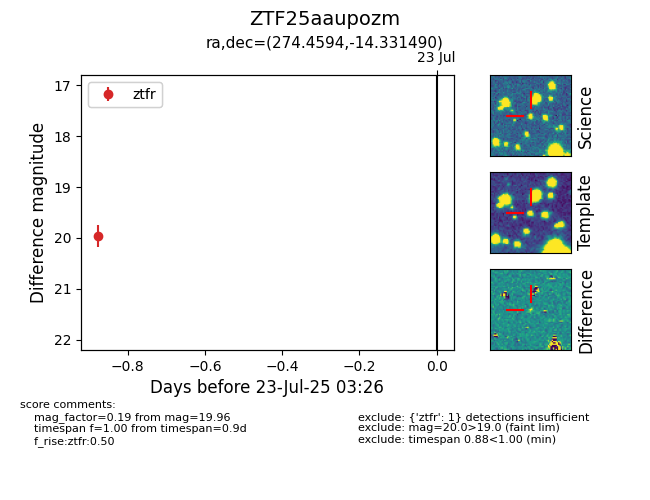

Target ZTF25aaupozm at 2025-07-23 12:37, see:
FINK: fink-portal.org/ZTF25aaupozm
Lasair: lasair-ztf.lsst.ac.uk/objects/ZTF25aaupozm
ALeRCE: alerce.online/object/ZTF25aaupozm
alt names
ZTF25aaupozm (ztf,fink)
coordinates:
equatorial (ra, dec) = (274.4594,-14.33149)
galactic (l, b) = (16.3812,+0.75042)
photometry
last ztfr=19.96
1 ztfr detections
